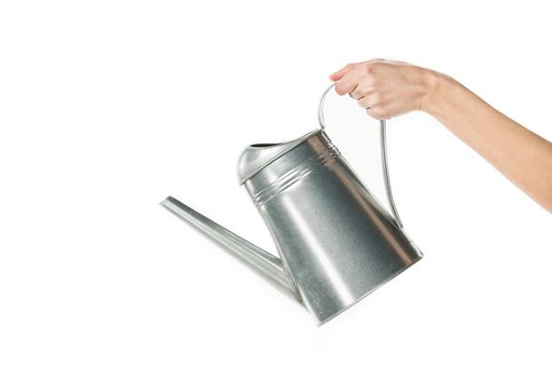
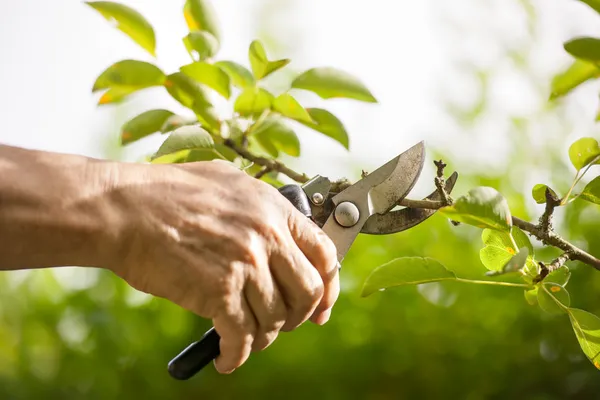
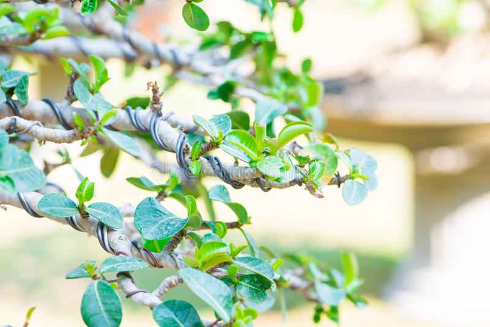

Bonsai care guides
Watering
Water is an essential element for every plant. If this element is lacking, the plant is forced to draw reserves from itself, and this will take away its strength. On the other hand, if this element is in excess, the substrate becomes bedridden, the roots are suffocated and end up rotting, irrevocably leading the plant to death. It is necessary to find balance.

How frenquently should I water my Bonsai?
There is no ideal frequency as it depends on the environment heat, the degree of humidity in the air, the size of the container (a very small or low container will dry faster than a wide and deep container). To better understand the process, you can initially weigh the bonsai when the substrate starts to dry. This will be your reference weight. Water abundantly (excess water will run down the drain holes), and weigh again. The weight difference corresponds to the volume of water you added. Then weigh it every two days, look at the foliage, feel the moisture in the substrate with your fingertips. Water it only when the reference weight is nearby. This way, you will quickly learn to detect when your bonsai is thirsty and you will be able to stop needing to weigh it.
Which water to use?
Tap water at room temperature is suitable for species that tolerate limestone, but in general, this water is too calcareous for plants with acidic soil (Japanese maple, camellias, azaleas...). In this case, prefer rainwater.
Should I spray the foliage with water?
This practice should be avoided. In fact, by humidifying the foliage when the air is dry, you will suddenly create a humid atmosphere around the plant and it will change the way it breathes, by opening the pores of the leaves... but with some delay. . This can have the opposite effect because the plant, when opening the pores, dehydrates faster than if it had not done anything.
It is better to favor a humid atmosphere by placing some bowls filled with clay balls and water around the bonsai. Of course, in this case it is necessary to be careful to avoid the air currents that will disturb this microenvironment.
Should I immerse my bonsai?
This method of watering can be dangerous as it can lead to excess water harmful to the roots, as well as compaction of the substrate. Do not immerse your bonsai pot in water unless you have forgotten to water it for a long time or if the substrate is clayey and compact.
Fertilizing
Like any natural plant the bonsai is fed by the roots and the leaves that absorb the necessary light for the photosynthesis, the CO2 of the atmosphere and the water, the three main elements factors of the growth.
But that's not enough, to live the bonsai will need a lot of supplementary minerals, in more or less quantity, to satisfy its basic functions. The Roots are therefore the driving force behind the bonsai's diet and they search the soil for the substances they need, namely water, mineral salts and micronutrients.
And as always, not too little, not too much, the main elements must respect the balance.
Fertilizers are made up of three basic elements:
- Nitrogen (N) = foliage growth and color;
- Phosphoric acid (P) improves root growth and increases flowering as well as fruit set;
- Potassium (K): helps in the assimilation of Nitrogen (N) and is an essential factor in the natural defense of bonsai
| Spring | Summer | Autumn | Winter |
| Choosing the right fertilizer is very important: during the early spring season, use a fertilizer with a relatively high Nitrogen content (something like NPK 12:6:6) to boost the tree's growth. |
During summer, it is very important to maintain the balance of the plant, since there is more evapotranspiration and mass flow, it is highly recommended that you use a more balanced fertilizer (such as NPK 10:10:10). |
During autumn, I recommend that we prepare the plant organism for the winter, for this we have to provoke its hardening, use a fertilizer for the next winter (like NPK 3:10:10 for example). |
During winter your Bonsai will be in a dormant state, I recommend at the end of the season to stimulate the Bonsai to bloom, use a fertilizer with a high content of Potassium (K) (such as NPK 6:6:12); giving more energy. |
Soil
A good substract must have:
- Good water retention: The soil needs to be able to hold and retain a sufficient amount of water to provide the Bonsai with moisture between each watering.
- Good drainage: The soil should have the ability to immediately drain excess water out of the pot. Soils that lack good drainage are very water-retaining, lack aeration and are subject to an accumulation of salts. Retaining too much water will also cause the roots to rot, killing the tree.
- Good aeration: The particles used in a Bonsai soil mix must be of sufficient size to allow small gaps or air pockets to form between each particle. In addition to the need for oxygen for the roots, it is also important to allow the good bacteria and intact mycorrhiza to occur, so that food processing will take place before it is taken up by the hair roots and sent to the leaves for photosynthesis.

Pruning
Bonsai pruning is an essential intervention.

Why?
Bonsai is a natural plant and even if it is limited in a small pot it will always grow and develop, it is a natural phenomenon.
The same plant grown in the ground will grow in height and can reach an exceptional size.
In the spirit of bonsai, we have to keep the plant on a reduced scale to imitate a specimen in nature.
How?
There are two types of pruning:
- The structuring pruning that consists of defining the general bases of the trunk and main branches, decisive elements to convey the perception that the author wants to give to his bonsai: strength, elegance, lightness, movement... pruning that can also be performed at the same time than the transplant and thus take advantage of it to achieve a balance between the aerial part and the root part.
- Maintenance pruning, lighter than structuring pruning, which is equivalent to cutting new branches, as a general rule, when the bonsai has six new leaves, leave only the first two. The main characteristic of maintenance pruning is to maintain the visual appearance of the bonsai, as defined by structuring pruning.
When?
Structuring pruning is carried out from December to the end of February, as a general rule, we take advantage of the state of descending or stagnant sap (in order not to waste the sap).
A weakened tree should never be pruned.
Ideally, prune the bonsai one or two weeks after the leaves have fallen.
Maintenance pruning can be carried out at any time of the year, depending on the species and the respective environmental conditions (indoor or outdoor).
Always apply a healing paste on larger cuts, it helps healing and prevents the entry of fungi.
Root Pruning
Root pruning is also important at the transplant stage, it is thanks to the cutting and the respective reduction of the main roots that we can achieve an increase in the volume of the thinner secondary roots.
In fact, the bonsai, unlike a tree in nature, does not need thick roots to be “stuck” to the ground, but a multitude of secondary roots to help in the development of a more intense and thinner branch.
The fact of limiting the development of main roots also helps to favor the expansion of nebari, (Japanese expression that means shallow roots).
In nature one of the most beautiful aspects of a tree are the roots that transmit the strength developed to hold the tree to the ground.
The base of the trunk together with the superficial roots is called nebari.
Wiring
Bonsai is neither a dwarf plant nor a plant with curves by nature, we have to intervene in different ways to “build” a bonsai or transform a plant into a bonsai.
It's called bonsai styling.

We can form a bonsai from any plant as long as it is woody, there are several styles to form bonsai as you can see in our Styles section
Bonsai wiring consists of winding an aluminum or copper wire around the trunk or a branch, to change its direction, in order to define the desired shape.
Wiring can be done practically all year round for most bonsai species, preferably in winter for conifers, the wire will remain for several months and will be removed before starting to mark the bark, in the summer it will be the bonsai's turn of perennial leaf remaining for at least three months.
In any case, if, when removing the wire, the branch or branch does not remain in the desired position, then we will have to repeat the wire for a few more months.
It is advisable to apply the wire without tightening it too much so as not to mark the bark of the branch, as a rule we leave a free space between the wire and the bark. Over time, it is important to monitor the impact of the wire and remove it before it becomes embedded in the bark of the tree.
The wire must have a support to be effective, you must start placing the wire in the root ball and wrap it around the trunk or on the first (lower) branches.
For the upper branches, start from the trunk or around a thicker branch, always respecting an angle of 45º, always starting with the thickest branch and continuing to the thinnest branch.
Tip: the wire must come from top to bottom to bend the branch up and from the bottom to top to bend the branch down.
As a rule, we use a wire with 30% of the diameter of the branch we want to shape, for example a branch with a diameter of 10 mm = a wire with a diameter of 3 mm. Just do a test and see if the wire holds the branch or if it is the other way around, in this case change to a thicker wire.
The length of the wire corresponds more or less to two or three times the length of the branch to be molded.
In a first phase, the wire is placed in all the branches that we want to direct and only then we begin to shape and stylize the bonsai as desired.
We should never cross wires to avoid strangling the bonsai branch and we should never transplant a bonsai that has been severely wired.
Bonsai wiring requires a lot of care in handling and shaping the branch, as some species are very fragile and can break easily, as is the case with azaleas.
It is necessary to be attentive, especially during the growing season, to prevent unnecessary injuries to the bark caused by the wire.
Just remove the wire and put it back in to avoid this kind of situation.